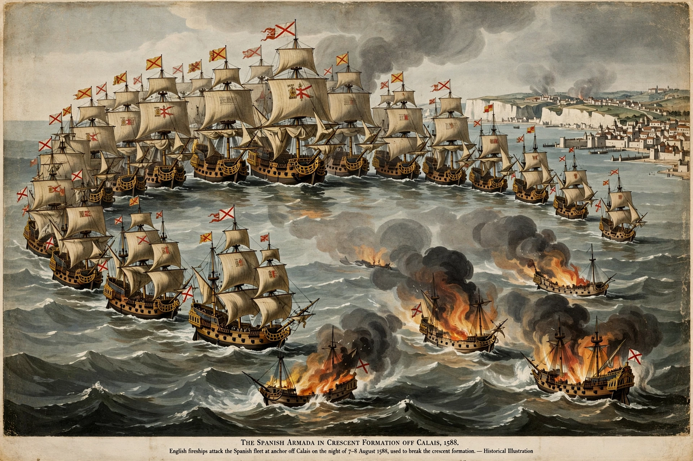

Spanish Armada
From Wikipedia, the free encyclopedia

The Spanish Armada (the Grande y Felicísima Armada) was the great fleet of some 130 ships that Philip II of Spain sent against England in 1588 to escort an invasion army from the Spanish Netherlands and end English support for the Dutch revolt and privateering. Harried up the Channel by the English fleet, scattered by Fireships at Calais and mauled at Gravelines, the Armada fled north around Scotland and Ireland, where storms wrecked dozens of ships; perhaps a third of its men died. The defeat became a foundation myth of English (and Protestant) identity.
The campaign
The plan — Parma's Army of Flanders ferried to Kent under the Medina Sidonia's escort — was compromised from the start by communications, Dutch blockaders and the lack of a deep-water port. Week-long Channel running battles (Plymouth, Portland, the Isle of Wight) damaged few ships but spent Spain's shot; the fireship night at Calais (7–8 August) broke the crescent formation, and at Gravelines English gunnery battered the fleet, which escaped only northward.
The return and consequences
Autumn gales on Scotland's and Ireland's coasts took the heaviest toll — wrecks from Fair Isle to Kerry, survivors often killed ashore. Spain rebuilt and sent further armadas (1596, 1597) also scattered by weather; the war ground on to 1604. England's deliverance — commemorated in medals ('God blew, and they were scattered') — masked how close-run and weather-decided the affair was, a nuance modern historians stress against the myth.